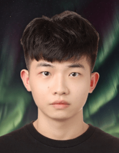

Hello! I'm Siyuan Mei, a third-year PhD student at FAU, where I'm fortunate to be advised by Prof. Andreas Maier. Previously, I received my M.Sc. degree from FAU and my B.Eng. degree from Zhejiang University of Science and Technology. My research focuses on machine learning and medical imaging. I'm part of the ERC-funded project "Advancing osteoporosis medicine by observing bone microstructure."
You can contact me at siyuan.mei@fau.de and view my resume here.
Outside of research, I am learning tennis (level of 2.5).

We submitted 9 manuscripts to MICCAI 2026!
We won the first place in MICCAI SynthRAD2025 Challenge!
Invited as a reviewer for MICCAI 2026.
Invited as a Technical Editor for the Journal of Medical Imaging.
Invited as a reviewer for MELBA (Journal of Machine Learning for Biomedical Imaging).
Pattern Recognition Lab, FAU Erlangen-Nürnberg
FAU Erlangen-Nürnberg
Zhejiang University of Science and Technology